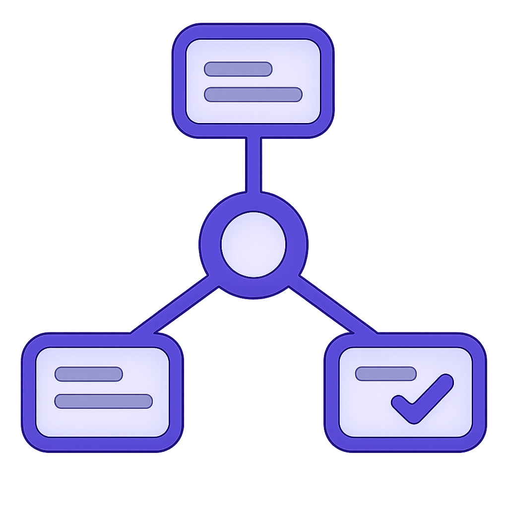

1
One board, never a lost chat
Your work lives on a shared board that survives restarts, handoffs, and parallel sessions — not in a conversation you’ll lose.

AI MaestroAI Maestro turns your plans into a shared board and puts a team of AI coding agents to work on them — planning, building, checking, and shipping one task at a time, while you hold the baton.
Instead of one long chat that forgets where it was, AI Maestro runs your work like an orchestra: a shared plan, the right agent on each part, and a review before anything ships.
Your work lives on a shared board that survives restarts, handoffs, and parallel sessions — not in a conversation you’ll lose.
A one-line wording fix and a major backend change shouldn’t get the same treatment. Each task is routed to a fitting agent and model automatically.
Plan, build, review, ship. A review-and-test step runs on every task — it’s built into the process, not something you have to remember.
Each task is worked on its own private copy of your project, so parallel work never steps on your live app and a bad attempt never touches the real thing.
Works with Claude Code, Codex, OpenCode, and other coding agents. Same board, your choice of tool — swap freely.
Nothing happens in the background. Work starts only when you ask, one task at a time, and anything risky waits for your approval.
You describe what you want and approve the plan. Then, each time you say “go,” AI Maestro takes one task all the way through. In plain terms, here’s what that looks like.
AI Maestro chooses the next ready task — the top priority with nothing blocking it.
It marks the task “in progress” so nothing else picks up the same work.
It works in a private copy of your project, leaving your real project untouched.
The right agents plan and make the change, following your description of “done.”
The work is reviewed and tested. A failing check stops the task instead of shipping it.
If everything passes, the change is merged in and the finished task is filed away.
Every run ends with a clear result: done · blocked · nothing to do · couldn’t merge — always with evidence.
You will copy AI Maestro into your project, answer two setup questions, describe your project in everyday language, and add the first piece of work to the board.
Ask a technical teammate for help with this one-time step if needed. Install Git, Node.js 18 or newer, and an AI coding application that supports agents, such as Claude Code.
This checks Node.js. A result beginning with v18 or a higher number means it is ready.
A terminal is a text-based way to give your computer instructions. Replace the example path below with the folder containing your project.
If your project does not exist yet, create a folder first, open it in the terminal, and run git init.
Paste this command. It downloads AI Maestro into a new folder named maestro and steps inside it. It does not change your application files.
From inside the maestro folder, run the command below. AI Maestro asks for your project name and its main areas. “Areas” simply means parts such as frontend, backend, infra, or docs. Press Enter to accept a suggested answer.
The command creates the board and prepares the agent instructions where your AI coding application can find them.
The terminal says your project “is ready”Open context.md (inside the maestro folder) in any text editor. Replace the examples with a short, honest description: what the product does, how you normally test it, and anything agents must never do without asking.
You do not need technical prose. For example: “This is a booking website. Before finishing, run our normal test command. Never publish to production without asking me.”
Run the command above (from the maestro folder) after saving. Re-run it whenever you change the context or configuration.
The easiest option is AI Maestro’s visual board. From the maestro folder, start it with the command below, then open the web address printed in the terminal—normally http://localhost:5273.
Create a ticket with one clear outcome. Write what “done” means in the description, choose an area and model, set the status to todo, and select the agent steps. For a normal feature, use pe → backend/frontend → qa → merge.
Open your AI coding application at the project’s top-level folder—not inside the maestro folder. Select or mention the orchestrator agent and say:
The orchestrator should choose one ticket, work in an isolated copy, run its checks, and report done, blocked, idle, or merge-failed. Review the result before asking it to run another ticket.
Use the same repository and the same AI Maestro board with both tools. Start every session at the project root so each tool can see your application and the maestro/ folder.
AI Maestro’s setup renders role and skill files into .claude/. Select the generated orchestrator agent when running work. Ordinary Claude sessions can use the planning prompts below.
The current renderer does not create Codex-native agent files. Codex can still operate the same board: use the bootstrap prompt below so it reads AI Maestro’s source instructions before planning or running work.
This repository uses AI Maestro for delivery. Before acting, read (these are the RENDERED instructions at the repo root — use them, not the raw templates under maestro/): - CLAUDE.md (project brief + model policy) - .claude/agents/orchestrator.md and the rendered roles + skills under .claude/ - maestro/board/data.json and maestro/board/archive.json Treat maestro/board/data.json as the source of truth. Validate board changes with: node maestro/scripts/validate-board.mjs maestro/board/data.json Do not invent progress or evidence. Do not bypass human gates. When running work, follow the orchestrator contract, handle one ticket unless I explicitly ask for more, and report done, blocked, idle, or merge-failed with specifics.
Read the AI Maestro context and current board. Help me turn the following outcome into a practical delivery plan: [DESCRIBE WHAT YOU WANT] First ask only the questions needed to remove important ambiguity. Then propose: - outcome-based epics - small, independently shippable tickets - clear acceptance criteria - dependencies, area, priority, size, agent plan, execution mode, and model - human gates only where real judgment or risk requires them Show me the proposal before changing files. After I approve it, update maestro/board/data.json, preserve existing work, run the AI Maestro validator, and summarize what was added.
Add this work to the AI Maestro board: [DESCRIBE THE CHANGE] Inspect the project and existing board first. Reuse an existing epic when it fits; otherwise propose a new epic. Make the ticket independently shippable and write testable acceptance criteria. Choose sensible area, priority, swag, dependencies, agent_plan, execution_mode, and model. Show me the proposed ticket before writing it. After I approve, update maestro/board/data.json, validate it, and tell me whether the ticket is ready or blocked by a dependency or human gate.
Run the next ready AI Maestro ticket. Read the board; select the highest-priority eligible todo ticket; claim it before implementation; follow its agent plan in an isolated worktree; run the required QA and release gates; and keep the board truthful. Handle one ticket only. Do not bypass a human gate or merge a failing change. Finish with done, blocked, idle, or merge-failed and include the ticket ID and verification evidence.
Audit the AI Maestro board against the repository and git history. Report: - work in progress - ready work in priority order - blocked or human-gated work and the exact reason - completed work that should be archived - stale or unsupported status/evidence claims Do not change anything yet. Show the proposed corrections with evidence. After I approve, update the board and archive, run validation, and summarize every change.
“Customers need to reset a forgotten password by email. The link should expire after 30 minutes, and support should be able to see when an email was sent.”
This is enough for the planning prompt to ask about email provider, security rules, UI, and tests before proposing tickets.
“Checkout feels slow. Measure it first, then make the payment page load in under two seconds without changing the design.”
This encourages a measurement ticket before implementation and produces an objective acceptance criterion.
“When a user enters an invalid phone number, show what format we expect instead of saying ‘Something went wrong.’”
This should become one small frontend ticket with focused UI tests—not a large multi-stage epic.
The point isn’t to hand everything to a machine — it’s to keep the repetitive, error-prone parts consistent while the decisions that matter stay yours.
No. You describe what you want in everyday language and approve the results. The one-time install is the only technical step — a teammate can help with it.
No. Work happens on a private copy and is only merged after checks pass. Risky steps wait for your approval, and nothing runs in the background.
Claude Code works today, with copy-and-paste prompts for Codex and other agents. They all share the same board.
AI Maestro is open source and free to use. You bring your own AI coding tool and pay that provider directly for the work it does.
Every run ends with a clear status and evidence, and AI Maestro keeps timestamped backups of your board. You review each result before moving on.
Run one conductor at a time for now, and it handles one task per request — so you can review the work as it lands instead of all at once.
Copy AI Maestro into your project, answer two short questions, and describe your first task in plain words. You bring the vision and the approvals — your AI agents plan, build, check, and ship the rest.